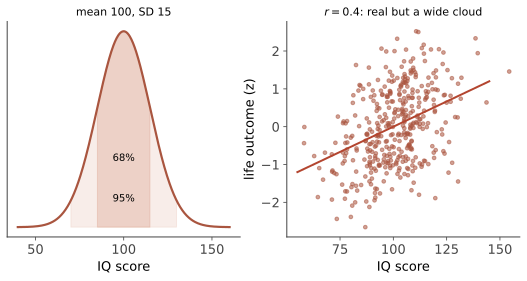

认知 V · 语言与智力
两个话题合并一页，因为它们共享同一个尴尬：都是心理学最有预测力的领域之一，也都是社会争议最大的领域。本页力求把"证据说了什么"与"社会应当怎么办"分开——混淆这两者正是这个领域历史事故的根源。
1. 语言
层级：音位 → 词素 → 句法 → 语义 → 语用。产出性（有限规则生成无限句子）是人类语言的核心特征。
习得【稳的部分】：普遍的阶段序列（咿呀 → 单词 → 电报句 → 语法爆发）、过度规则化（"我跑了" → "我 goed"式错误，证明孩子在提取规则而非模仿）、儿向语言、关键期证据（第二语言的口音与句法习得随年龄下降；极端剥夺个案如 Genie）。
【争】先天 vs 学习：Chomsky 的普遍语法与"刺激贫乏论"曾是主流；当代基于用法的学习理论（Tomasello）与大规模语料统计学习的成功，使"需要多少先天结构"成为开放争论——大语言模型仅靠预测下一个词就获得强句法能力，被双方各自引用为证据（🔗 语言·信息·智能站 :8086 的整门课在讨论这件事，本站不重复）。
【摇】语言相对论（Sapir–Whorf）：强版本（语言决定思维）已被否定；弱版本（语言影响某些认知任务的效率与默认视角）有可复现证据——颜色范畴对辨别速度的影响、空间参照框架（有绝对方位语言的社群空间任务表现不同）、语法性别对物体描述的影响。读法：语言是思维的偏置，不是牢笼。
双语【稳→摇】：双语者在语言产出速度与词汇提取上有小劣势（尖端现象更多）、在语言切换任务上有优势；但流行的"双语带来一般性执行功能优势"在大样本预注册研究中大幅缩水甚至消失——这是复现危机波及的又一处（第 03 页的模式）。
2. 智力：测量的成功与争议
定义：从经验中学习、适应环境、抽象推理的能力集合——心理学史上最具预测力也最具争议的构念。
\(g\) 因子【稳（作为统计事实）】：几乎所有认知测验之间正相关（"正流形"），因素分析提取出一般因子 \(g\) + 若干群因子（CHC 模型：流体推理 Gf、晶体知识 Gc、工作记忆、加工速度…）。注意：\(g\) 是统计规律，"它是什么"（单一资源？多过程的涌现？网络效率？）仍是开放问题——把统计因子实体化为"一种脑物质"是常见错误。
测量：IQ 标准化为均值 100、标准差 15。信度很高（重测 r ≈ 0.9），效度：对学业、职业绩效、收入、健康与寿命有稳定但中等的预测（职业绩效相关 r ≈ 0.3–0.5 量级，仍是单变量中最好的预测因子之一）。

发展与变化：Flynn 效应【稳】——20 世纪 IQ 原始分持续上升（每十年约 3 分），主要在流体推理项目上，说明测验分数对环境高度敏感（营养、教育、抽象思维的日常化）；部分发达国家近年出现停滞或反转的报告。流体智力随年龄下降、晶体智力保持或上升到很晚【稳】。
【争，必须小心的部分】遗传与群体差异：个体差异的可遗传性随年龄上升到 0.5–0.8（第 05 页），但——群体内的可遗传性无法推出群体间差异的原因（这是行为遗传学最重要的一条逻辑规则：同样的种子在肥沃与贫瘠土壤中长出的高度差异，完全是环境造成的，尽管每块地内部的差异高度可遗传）。历史上智力测验被滥用于优生学与移民限制，是这个学科最黑暗的一页——本站的立场是：报告证据的边界，拒绝把统计学结论直接翻译成社会政策。
多元智能【摇→倒（作为科学理论）】：Gardner 的八种智能在教育界极流行，但缺乏因素分析支持与独立测量，主流心理测量学不接受其为可验证理论；情商 EQ：作为能力测量（MSCEIT）有一定效度且与 \(g\) 部分重叠，作为流行畅销概念则严重超卖【摇】。
3. 创造力（一段）
发散思维（多解）与聚合思维（最优解）的组合；创造力测验（如替代用途任务）与 \(g\) 呈阈值关系（智力到一定水平后不再是瓶颈，动机与领域知识接管）。【摇】"右脑创造力"与多数创造力训练课程证据薄弱；扎实的领域知识 + 大量产出（多产者出精品）是创造性成就最稳的预测因子之一。
4. 反直觉清单
- IQ 不是"聪明程度的分数"而是"在一组特定任务上相对同龄人的位置"——它测得准的是它测的东西；
- 测验分数可变（Flynn 效应）而可遗传性高，两者不矛盾（第 05 页第 3 条规则）；
- 高智力不等于好决策：理性思维与智力只是中等相关（Stanovich 的"理性障碍" dysrationalia：高 IQ 者一样中招锚定与确认偏差，且更擅长为自己的偏见找论证）——这是第 10 页与本页之间最重要的一句话。
认知线收官。下一线转向"人如何变成现在的自己"：发展、动机情绪、人格。